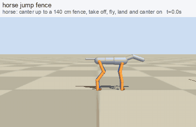

Green = comes out of general rules (gait from body size, footholds from terrain, reactions chosen by predicting geometry). Yellow = goals for pelvis, hands and feet solved by IK. Purple = hand-built kinematic model. Blue = trained or evolved on a physical body.
Walking, running and terrain (one planner, gait from the Froude number)
walk_runemergent stand, walk, fast walk, run, back to walk, stopstairs_up_downemergent stairs are just terrain: footholds searched, swing height from the terrainslope_up_downemergent slopes: trunk pitch and foot rotation follow the ground normalstep_over_logemergent step over a logduck_under_beamemergent auto-duck below a ceilingaround_obstaclesemergent A* navigation around wallsbodies_walkemergent different bodies (tall, dwarf, belly, armour, pack, skirt) pick their own posturecrowdemergent 14 people cross a plazarun_forestemergent run through a forest: A* around trunks, duck under low branchesrun_crowdemergent run through a crowd: speed follows the gap, shoulders turnoutfits_walkemergent tight skirt, wide skirt, trousers, heavy boots, high heels, chainmail, plate: limits, mass, foot shapelimp_peopleemergent sore leg, rigid stick for a lower leg, crutches with one leg held uplimp_dogsemergent dog with a sore leg, on three legs, with a stick for the lower hind legclimb_rockemergent rock face: only the coloured holds can be usedclimb_treeemergent tree: branch stubs are the only holds
Jumping (power-limited: the planner refuses a jump the legs cannot make)
jump_gapemergent 1.2 m gap from a run-upjump_wallemergent standing jump over a 60 cm wallcat_jump_upemergent cat: 8 spine joints coil, stretch, tuck, land

horse_jump_fenceemergent horse: stiff column, small trunk rotationquad_jump_speciesemergent same relative obstacle: cat, dog, wolf, pig
Animals: spine, neck, tail and feet differ by species
animals_trotemergent dog, cat, horse, wolf, pig trotquadruped_speedsemergent walk to gallop by Froude numberhorse_loademergent horse with 0, 90, 180 kgquad_species_tailsemergent balance tail, wag, low tail, curlhorse_gait_tailemergent 5-joint neck nod, hair tail flags and flicksanimals_stairs_logemergent stairs and a log, four legs
Birds and snake
birds_walkemergent bird gaitsbird_flightkinematic model flapping flight model (beat rate from mass)bird_land_groundkinematic model landing on the ground: flare, feet first, run outbird_land_branchkinematic model landing on a branch: near-stall, toes gripbird_land_waterkinematic model landing on water: skid and floatsnake_aroundkinematic model serpentine motion between walls
Everyday situations (goals for pelvis, hands and feet + IK)
door_opengoal script open a doorsit_standgoal script sit on a chair and standsit_tablegoal script sit at a tablebed_lie_risegoal script lie down in a bed, get upget_up_floorgoal script get up from the floorladder_climbgoal script ladderridergoal script ride a horseswim_freestylekinematic model swim, head above waterdive_swimkinematic model divecrowd_squeezeemergent squeeze through people: shoulders turn, hands go upbump_heademergent hit the head on a beam
Combat as a set of reactions (no scripted duel)
run_into_wallemergent run into a wall: seen early, late, not at all (arms and knees lengthen the stop)weapon_reactionsemergent axe vs shield, axe on a bare head, arrows dodged, caught by a shield, taken; shin blockhit_reactions_cphysics, evolved groin (man vs woman) and kneehit_reactions_aemergent hit on head, torso, arm: stagger, doubled over, drop the weapon, clutchhit_reactions_bphysics, evolved leg: limp; hard head blow: physical fall, lie, get up; blow in the backdodge_reactionsemergent notice in time: side step, duck, hop, block; too late: hitduelemergent two fighters choose targets and reactions on their ownpush_recoveryemergent shoved: recovery steps
Physical fall and landing reflex (MuJoCo, CMA-ES on a bone-injury score)
controller (240 held-out shoves and drops)
injury cost
head risk
torso
arms
legs
statue (stiff, no reflex)
3.72
0.46
0.67
0.44
0.71
hand-made starting pose
3.81
0.55
0.48
0.73
0.53
evolved on bone-injury score
1.61
0.02
0.01
0.61
0.78
Standing on a slippery slope (40 held-out slopes 8-25 degrees, friction 0.12-0.4)
controller
stays up 5 s
mean time up
mean slide
stiff body, no controller
0%
1.1 s
0.44 m
evolved controller
20%
1.8 s
0.25 m
A partial result: the evolved controller helps but most slopes still end in a fall.